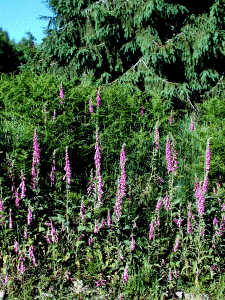
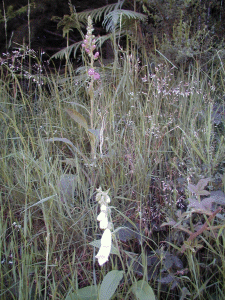
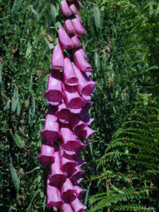
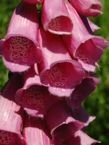

Les digitales en Forêt d'Ayguebonne
Digitalis purpurea L
Cette plante médicinale est très toxique. De ses feuilles on extrait la Digitaline, médicament pour le cœur.

Le 1/07/2001 les "digitales de pourpre" dont parlait Daudet sont en fleur.

Une anomalie ? Une digitale blanche au bord du chemin !

La hampe florale en plein épanouissement.

Les insectes sont attendus pour la pollinisation.
Si vous arrivez ici directement entrée du site
ici